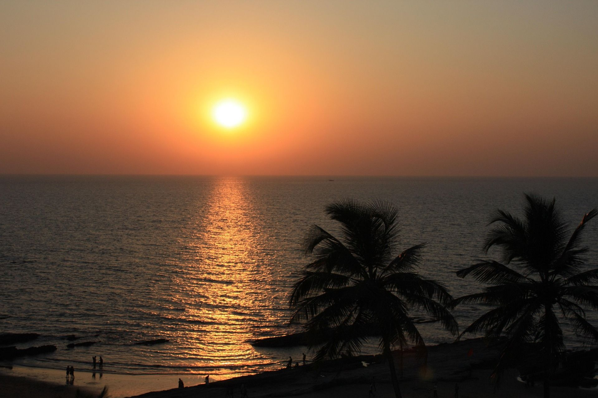
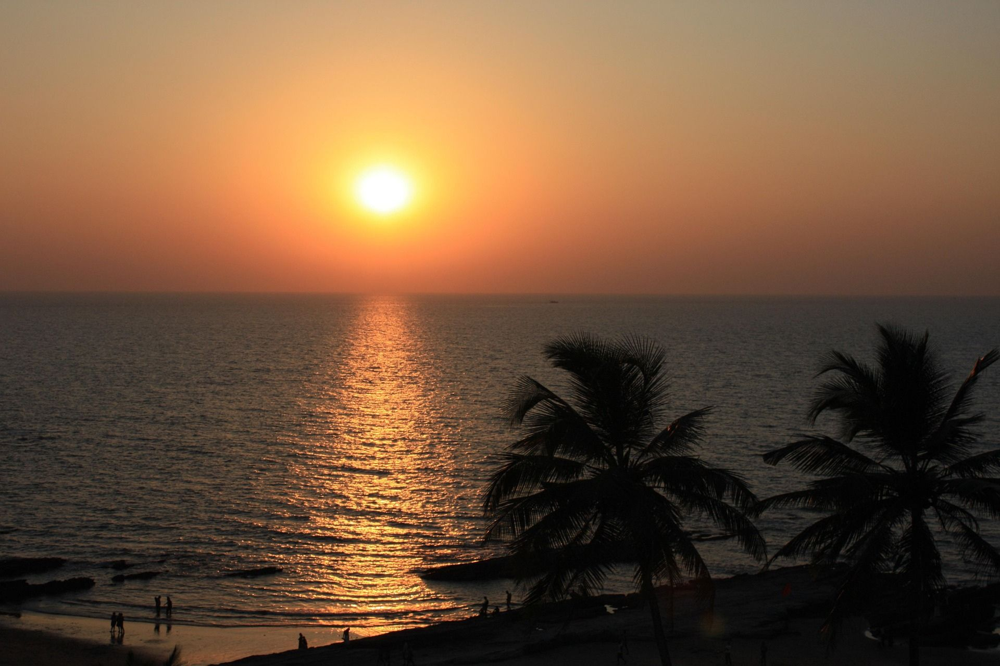
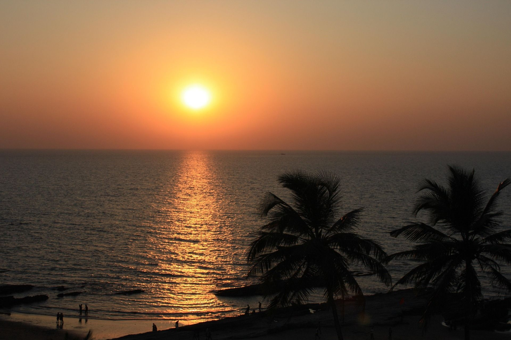

Explore Goa with Safarverse
Your ultimate 4-day tropical getaway

Your ultimate 4-day tropical getaway

Arrive in Goa, check into your hotel, and spend the day relaxing at Calangute Beach. Enjoy the sunset and try local seafood at a beach shack.

Visit Fort Aguada, Chapora Fort, and explore the vibrant markets of Baga and Anjuna. End the day at Vagator Beach for a spectacular sunset.

Spend the day visiting Palolem Beach, Colva Beach, and Cabo De Rama Fort. Enjoy water sports or just relax on the serene beaches.

Morning visit to spice plantations or a short city tour. Check out and head to the airport or railway station for your onward journey.